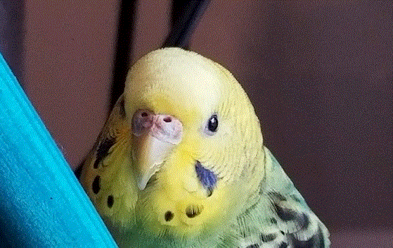
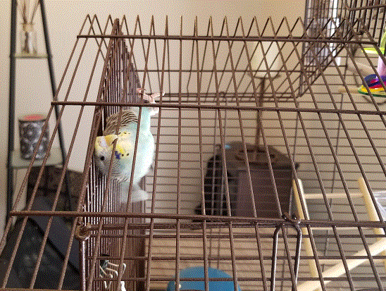

2018 brings birds in to my life
I moved into my condo in December of 2017. When 2018 began I was looking forward to having a garden, and I had not thought any about having any birds. Little did I know that at that time that when 2018 That was the most joy that has ever come into my life from such a small creatures.
Enter Little Hummies
I bought a nice pink flowering vine for the garden and with that came my idea to put out some Hummingbird feeders. Little did I know at that time these tiny little creatures would bring me an enormous amount of joy. But with these new creatures came a new side of me, a side that has a desire to be at one with nature. To care for another living being, to look outside of myself. Learning those skills was equally as rewarding as being able to watch these birds.
The summer was coming to an end, But before it did there was Birdly.
Birdly was this little sparrow that I could see was hurt. I put a shoebox out on the patio with a little paper towel bed in it and a little bowl of bird seed. A couple of days passed, and Birdly seemed to be getting better, until he wasn't. I called the wild bird sanctuary to see if I could bring Birdly to them, they said that would be good. I went outside and picked up Birdly to put him in a little box to take him to the sanctuary, and he literally went feet up in my hands. And that was the end of Birdly.
Summer was coming to an end, I started to get sad about my "little Hummies" leaving for the winter. It was suggested by someone that I know that I get a pet to fill this hole in my heart that had developed with the departure of the Hummingbirds.
Enter Buddie and Bakley my pet parakeets.
I was getting more and more sad as the days passed and the Hummingbirds left. I decided to go to the pet store and get my new birds. I picked the cutest (or at least I thought was the cutest) two little parakeets that I had ever seen. The blue one was named Baker, she passed away a few weeks ago. The green one is named Buddie.
After Baker died, Buddie got really sad, and so did I. I decided they way towards healing for both of us would be to bring a new friend into our lives and into our home. So it was off to the pet store.
Enter baby Edward.
At the pet store there is a glass enclosure with nearly 20 parakeets in it. When picking a baby parakeet it is impossible to know how they will act once you bring them home and their little bird personality starts to develop. Baby Edward seemed so content just sitting on his perch, staring at me as I stared at him. And we fell in love.
Birds are such fun little creatures. When Edward finally climbed out of his travel carrier and went to check out his cage, I felt a sense of releif knowing that he was starting to feel comfortable in his new home. I was quickly reminded about bird babies, eager to explore, no longer with the flock, not quite sure what they are supposed to do.
Silly Baby Edward
Edward has quickly become a member of our little family here. Buddie was a little hesitant at first, and I think a little annoyed. Edward is a baby and wants to follow Buddie around anywhere and everywhere she goes in her cage. It is a lot of fun to have these companions, always sure to bring a smile to my face. Parakeets make great pets provided you don't mind a little squaking.